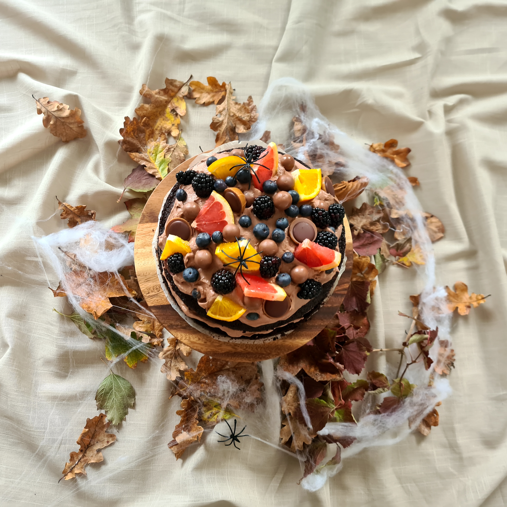
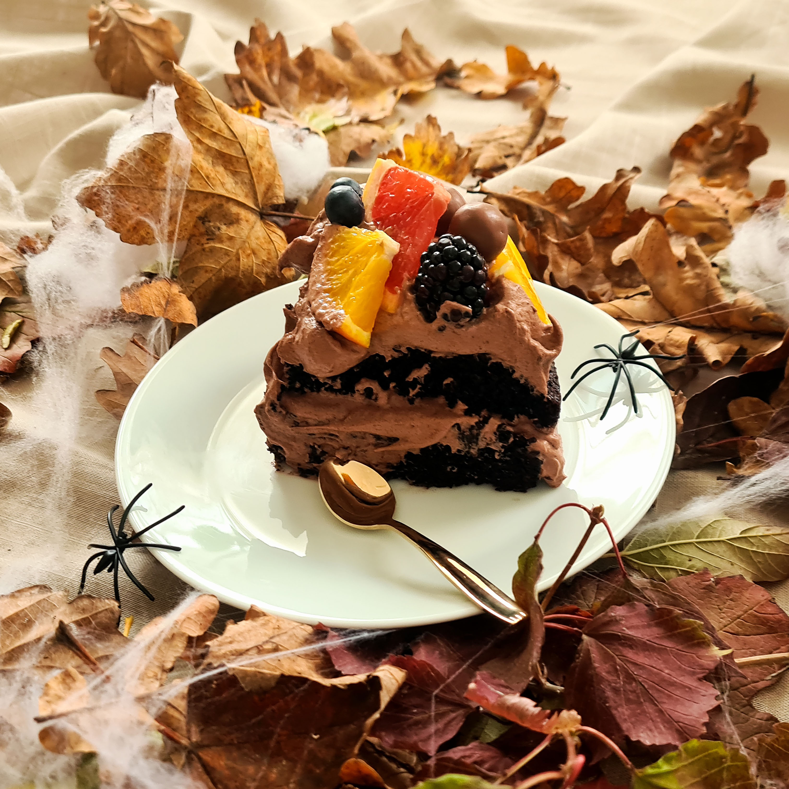

Halloween lagkage
Estimeret tid: 1 time
Budget: 100 kr.
Antal: Én chokoladekage til ca. 8 personer
Åh chokolade.
Alle elsker chokolade, og derfor skulle halloween i år selvfølgelig smage af chokolade. Denne kage er et sikkert hit til halloweenfesten! Den tager dig ingen ting at lave, sammenlignet med hvor lækkert et slutresultat du ender med at stå med. Pynt den flot af med nogen lækre bær, frugter og chokolade i efterårsfarver samt lidt edderkopper og spindelvæv, så er du halloween klar!
Pas nu på den ikke bliver for uhyggelig!….

Opskrift
1. Tænd ovnen på 175° C traditionel varme.
2. Sigt hvedemel, kakao, natron og bagepulver i en skål. Tilsæt sukker, vaniljesukker og salt og rør det hele sammen. Tilsæt æg, kaffe, mælk og olie og rør kort, indtil dejen er samlet. Hæld dejen i en smurt springform (ø 22 cm) med bagepapir i bunden.
3. Bag kagen på nederste rille i ovnen i ca. 45 minutter. Mærk efter med et træspyd om kagen er færdigbagt. Der må ikke sidde dej på spyddet.
4. Afkøl kagen fuldstændig. Befri den derefter fra formen og del kagen i to bunde med en brødkniv.
5. Kom indholdet fra et brev Cake Mousse Chocolate i en skål og tilsæt mælk. Pisk kort med en håndmixer på laveste hastighed, derefter 3 minutter på højeste hastighed til moussen er luftig.
6. Placer den nederste kagebund på et serveringsfad. Fordel halvdelen af moussen på bunden og læg næste bund på. Fordel resten af moussen på toppen af kagen.
7. Skyl bærerne og skær evt. store bær i mindre stykker. Pynt kagen med bær og forskellig slags chokolade.
